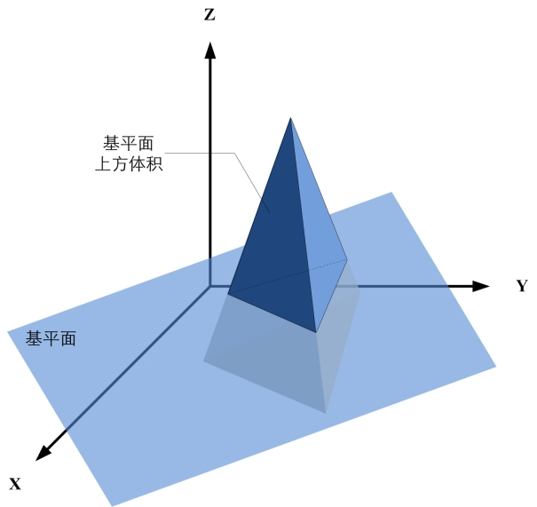
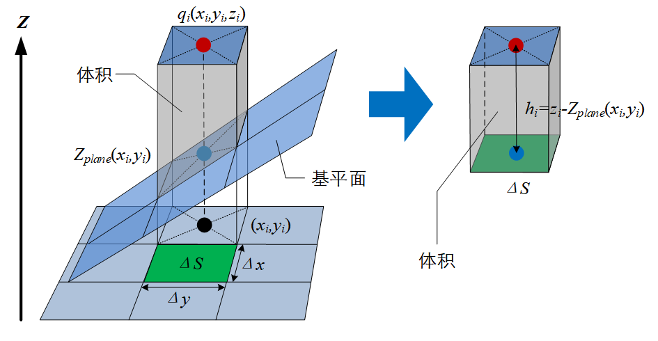
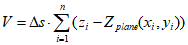
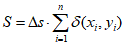
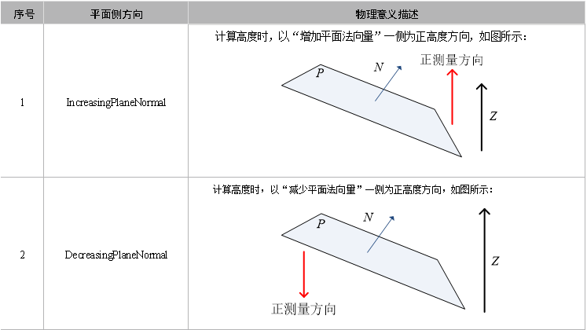

Trong đo lường 3D, công cụ đo thể tích chủ yếu dùng để lấy vật thể được tạo thành bởi các điểm không gian ba chiều trong vùng phát hiện của ảnh độ sâu, đồng thời đo thể tích phía trên mặt phẳng cơ sở được chỉ định, diện tích chiếu trên mặt XOY và chiều cao vuông góc. Hình 1 thể hiện thể tích của một vật thể hình chóp tam giác phía trên mặt phẳng cơ sở.

| Phân loại | Tên tham số | Mô tả tham số |
|---|---|---|
| Cửa sổ thuộc tính | Hướng mặt phẳng | Gồm hai loại: phía tăng của vector pháp tuyến là hướng chiều cao dương và phía giảm của vector pháp tuyến là hướng chiều cao dương. |
| Loại ROI | Vùng cần phát hiện, gồm 8 loại: toàn bộ ảnh, hình chữ nhật, hình chữ nhật affine, hình tròn, vòng tròn, hình elip, đa giác, nhiều hình chữ nhật affine. | |
| Ngưỡng chiều cao tối thiểu | Lọc dữ liệu đo đã tính toán dựa trên ngưỡng chiều cao tối thiểu. | |
| Bật tính chiều cao vuông góc | Chọn “Có”, thì tính chiều cao vuông góc. | |
| Tính giá trị trung vị chiều cao | Chọn “Có”, thì tính giá trị trung vị chiều cao. | |
| Bật mask | Có bật mask hay không, chọn “Có” thì hiển thị các tham số như số lượng mask, số thứ tự mask, hình dạng mask. | |
| Số lượng mask | Thiết lập số lượng mask được bật, phạm vi giá trị là [1, 99]. | |
| Số thứ tự mask | Chỉ số mask hiện tại cần thiết lập. | |
| Loại mask | Hình dạng mask hiện tại cần thiết lập, gồm 6 loại: hình chữ nhật, hình chữ nhật affine, hình tròn, vòng tròn, hình elip, đa giác. | |
| Giới hạn trên thể tích | Phạm vi giá trị là [0, 100000], và giới hạn dưới phải nhỏ hơn hoặc bằng giới hạn trên. | |
| Giới hạn dưới thể tích | Phạm vi giá trị là [0, 100000], và giới hạn dưới phải nhỏ hơn hoặc bằng giới hạn trên. | |
| Giới hạn trên diện tích | Phạm vi giá trị là [0, 100000], và giới hạn dưới phải nhỏ hơn hoặc bằng giới hạn trên. | |
| Giới hạn dưới diện tích | Phạm vi giá trị là [0, 100000], và giới hạn dưới phải nhỏ hơn hoặc bằng giới hạn trên. | |
| Giới hạn trên giá trị chiều cao lớn nhất | Phạm vi giá trị là [-100, 100], và giới hạn dưới phải nhỏ hơn hoặc bằng giới hạn trên. | |
| Giới hạn dưới giá trị chiều cao lớn nhất | Phạm vi giá trị là [-100, 100], và giới hạn dưới phải nhỏ hơn hoặc bằng giới hạn trên. | |
| Giới hạn trên giá trị chiều cao nhỏ nhất | Phạm vi giá trị là [-100, 100], và giới hạn dưới phải nhỏ hơn hoặc bằng giới hạn trên. | |
| Giới hạn dưới giá trị chiều cao nhỏ nhất | Phạm vi giá trị là [-100, 100], và giới hạn dưới phải nhỏ hơn hoặc bằng giới hạn trên. | |
| Giới hạn trên giá trị trung bình chiều cao | Phạm vi giá trị là [-100, 100], và giới hạn dưới phải nhỏ hơn hoặc bằng giới hạn trên. | |
| Giới hạn dưới giá trị trung bình chiều cao | Phạm vi giá trị là [-100, 100], và giới hạn dưới phải nhỏ hơn hoặc bằng giới hạn trên. | |
| Giới hạn trên giá trị trung vị chiều cao | Phạm vi giá trị là [-100, 100], và giới hạn dưới phải nhỏ hơn hoặc bằng giới hạn trên. | |
| Giới hạn dưới giá trị trung vị chiều cao | Phạm vi giá trị là [-100, 100], và giới hạn dưới phải nhỏ hơn hoặc bằng giới hạn trên. | |
| Cửa sổ ảnh | Ảnh độ sâu | Hiển thị ảnh độ sâu cần phát hiện, hiển thị dưới dạng ảnh giả màu. |
| Vùng phát hiện | Hiển thị vùng cần phát hiện trên ảnh. | |
| Vùng mask | Hiển thị vùng cần mask trên ảnh. | |
| Liên kết dữ liệu | Ảnh độ sâu | Nhập ảnh độ sâu cần phát hiện. |
| Mặt phẳng cơ sở | Chọn mặt phẳng chuẩn để đo chiều cao. | |
| Biến đổi tuyến tính 2D | Biến đổi tịnh tiến, xoay, tỷ lệ của mục tiêu so với mẫu. | |
| Giao diện nâng cao | Không | Không |
| Phân loại | Tên tham số | Mô tả tham số |
|---|---|---|
| Cửa sổ giám sát | Ảnh độ sâu | Chiều dài, chiều rộng và kích thước pixel của ảnh độ sâu, cũng như các tham số dữ liệu độ sâu. |
| Thể tích | Thể tích của vật thể đo được trên mặt phẳng cơ sở được chỉ định, đơn vị: mm3. |
|
| Diện tích | Diện tích chiếu trên mặt XOY, đơn vị: mm2. | |
| Giá trị trung bình chiều cao | Giá trị chiều cao trung bình của dữ liệu chiều cao. | |
| Giá trị trung vị chiều cao | Sau khi sắp xếp dữ liệu chiều cao, dữ liệu chiều cao nằm ở vị trí giữa. | |
| Giá trị chiều cao nhỏ nhất | Giá trị chiều cao nhỏ nhất trong dữ liệu chiều cao. | |
| Giá trị chiều cao lớn nhất | Giá trị chiều cao lớn nhất trong dữ liệu chiều cao. | |
| Tâm khối chiều cao | Giá trị chiều cao của tâm khối vật thể đo. | |
| Số pixel trong bounding box của vùng | Số pixel trong hình chữ nhật ngoại tiếp nhỏ nhất của vùng phát hiện (bao gồm pixel không hợp lệ). | |
| Số pixel quan tâm | Số pixel bên trong hình dạng vùng phát hiện (bao gồm pixel không hợp lệ). | |
| Số pixel quan tâm nhìn thấy được | Số pixel hợp lệ bên trong hình dạng vùng phát hiện. | |
| Số pixel được sử dụng | Số pixel thực tế được dùng để đo chiều cao trong vùng phát hiện. | |
| Kết quả thực thi | Kết quả thực thi của công cụ. | |
| Thời gian thực thi | Thời gian thực thi của công cụ. | |
| Cửa sổ ảnh | Ảnh đầu ra | Hiển thị ảnh độ sâu đã phát hiện, hiển thị dưới dạng ảnh giả màu. |
| Liên kết dữ liệu | Giống các tham số trong cửa sổ giám sát, dùng cho các công cụ tiếp theo. |
Đo thể tích chủ yếu dựa trên tổng tích lũy chênh lệch giá trị Z giữa các điểm dữ liệu ba chiều và mặt phẳng cơ sở được chỉ định tại cùng tọa độ hai chiều, đồng thời kết hợp với diện tích vật lý thực tế mà pixel ảnh độ sâu biểu thị để tính thể tích, chủ yếu là tính chênh lệch giá trị Z từ điểm ba chiều đến mặt phẳng, như minh họa trong Hình 2.

Giả sử mặt phẳng cơ sở đã cho là aX+bY+cZ+d=0, điểm dữ liệu ba chiều là qi(xi,yi,zi), i = 1,2,…,n, diện tích vật lý được biểu thị bởi một pixel ảnh độ sâu là △s=△x△y, trong đó, △x là lượng tương đương vật lý của tọa độ pixel x, △y là lượng tương đương vật lý của tọa độ pixel y, thì thể tích V của vật thể được tạo thành bởi các điểm ba chiều trong vùng phát hiện phía trên mặt phẳng cơ sở là:

Trong đó, Zplane(xi,yi) biểu thị giá trị Z của điểm ba chiều qi trên mặt phẳng cơ sở aX+bY+cZ+d=0.
Từ công thức có thể thấy, thể tích được đo là tích của tổng tích lũy chênh lệch giữa giá trị tọa độ z của điểm ba chiều và ZPlane tương ứng trên mặt phẳng cơ sở với diện tích vật lý được biểu thị bởi pixel. Rõ ràng, chênh lệch tương ứng của điểm ba chiều nằm phía trên mặt phẳng là dương, còn nằm phía dưới mặt phẳng là âm.
Diện tích như minh họa trong Hình 3, công thức tính là:

Trong đó, δ(x,y) biểu thị giá trị độ sâu tại tọa độ (x,y) có đáp ứng yêu cầu hay không, nếu đáp ứng thì giá trị là 1, ngược lại là 0.
Step 1 Thiết lập hướng phía mặt phẳng
Khi thực hiện tính thể tích, cần xác định hướng đo; hướng phía mặt phẳng gồm 2 loại: IncreasingPlaneNormal và DecreasingPlaneNormal, ý nghĩa vật lý cụ thể được trình bày trong bảng sau. Kết quả đo thu được từ hai hướng phía mặt phẳng là hai giá trị đối nhau, do đó thể tích cuối cùng tính được cũng khác nhau.

Step 2 Thiết lập vùng phát hiện và mask
Để lấy dữ liệu điểm không gian ba chiều, cần thiết lập vùng phát hiện và mask, trong đó hình dạng vùng phát hiện hỗ trợ sáu kiểu thiết lập như hình tròn, hình elip, đa giác, hình chữ nhật, hình chữ nhật affine hoặc đoạn vòng tròn; mask hỗ trợ một số lượng nhất định (1~99) các thiết lập vùng gồm hình tròn, hình elip, đa giác, hình chữ nhật, hình chữ nhật affine và đoạn vòng tròn; lúc này, đo thể tích sử dụng dữ liệu điểm không gian ba chiều bên trong hình dạng vùng phát hiện sau khi loại trừ vùng mask.
Step 3 Thiết lập thống kê histogram
Thiết lập tham số đo chủ yếu là thiết lập tham số ngưỡng chiều cao tối thiểu, dùng để lọc dữ liệu đo đã tính toán dựa trên ngưỡng này nhằm thu được thể tích chính xác hơn.
Step 4 Thực hiện đo và xuất kết quả
Sau khi lấy dữ liệu điểm không gian ba chiều, thực hiện đo là có thể thu được thể tích của vật thể cần đo, đồng thời xuất ra các kết quả như thể tích, diện tích, chiều cao và số lượng pixel.
Tham khảo “\Samples\3D\深度图\3D测量工具.gvp”.